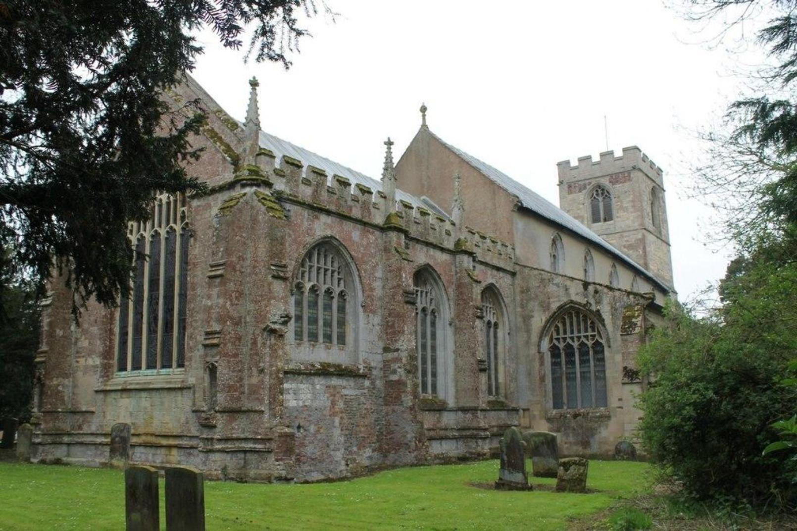
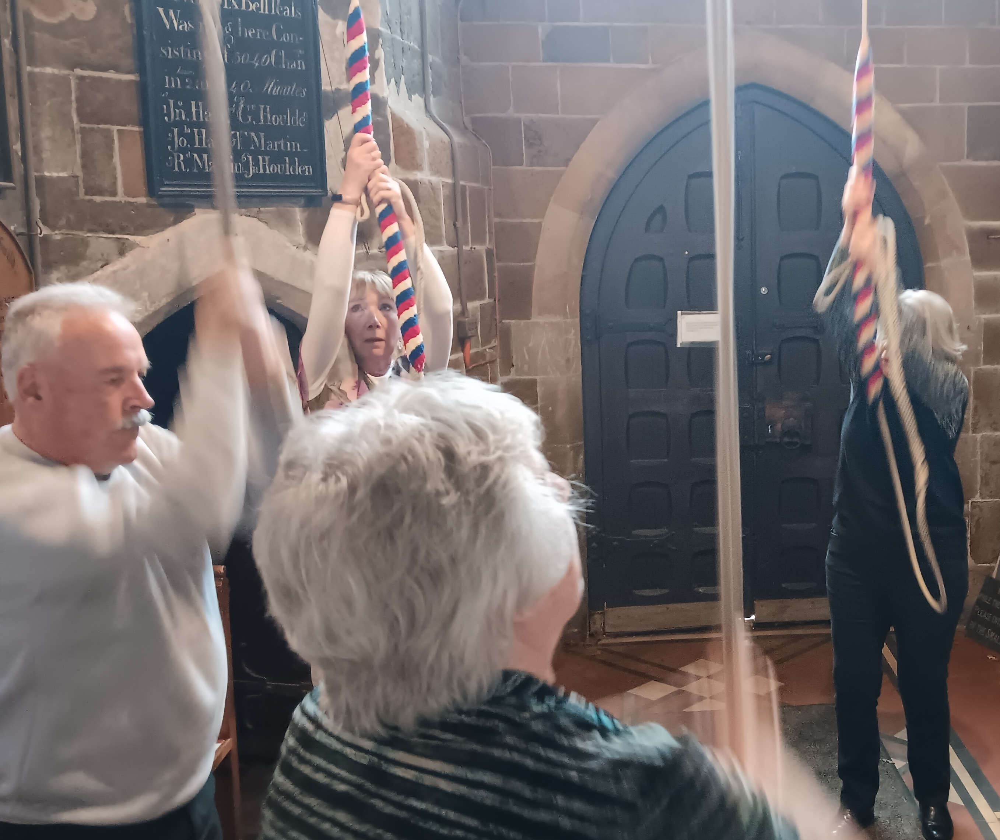
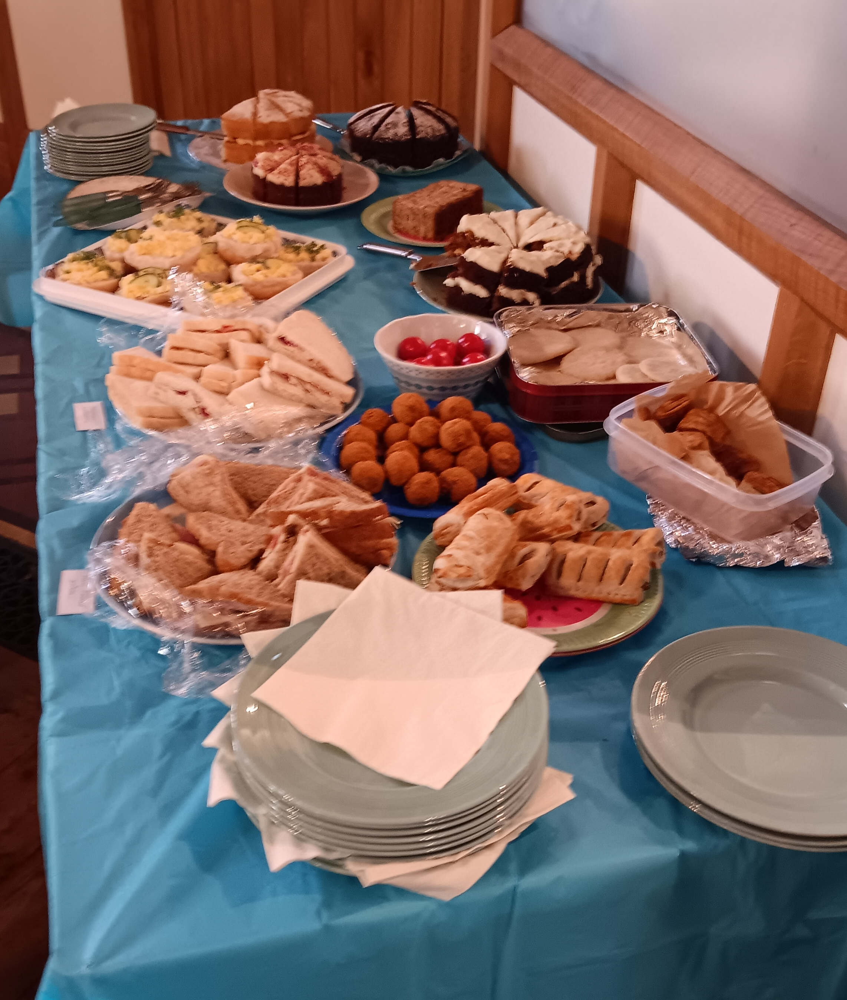

Race-Night Fund-Raising Event - Alford - 12 Oct 24
On the evening of Saturday 12 October, around 30 inveterate gamblers gathered at Alford Church Hall for the Eastern Branch's fund-raising event in support of the Guild. Once again the event was a Race Night, the 'Betty Collett Cup Meeting'.

There was a full race card of 9 races, each race having 8 horses. All of the horses in the first 8 races had been pre-sold to owners from throughout the Guild for the very modest sum of £2-50 each!
Thanks go to all our owners, and to our race sponsors.
The winners of the first eight races and their owners were:
1. A for 'orses - Colin Simpson
2. Willingham Wobbles - Sue Faull
3. F for 'vescence - Colin Simpson
4. L for leather - Colin Simpson
5. Lincolnshire Lad - Louise Bullen
6. Luna 007 - Jimmy Harris
7. T for two - Colin Simpson
8. Daddy Moon - Jacob Reynolds
Trainer of the Year award clearly goes to Colin Simpson who cleverly improved his chances by having a horse in every race. We hear that Jonjo O'Neill will be contacting him for advice.
The Betty Collett Cup
The last race of the night was the 'Betty Collett Cup'. This was a race-off between the winning horses from the previous eight races.
The winner of this race was 'Daddy Moon', owned by Jacob Reynolds, so the Reynolds family will be the proud holders of the Betty Collett Memorial Cup for the next 12 months.
At the halfway point in the proceedings there was a welcome break for a supper of lasagne followed by a crumble and custard, produced by Caitlin Meyer ably assisted by her team of helpers. Thanks also go to Mary Willoughby for the table settings.
The raffle provided more fun and prizes, raising £77.00, and our thanks go to all who donated prizes.
Overall, including the raffle, we raised over £700.00 for the Guild's funds. Our thanks go to all who participated in any way in the evening.
Phil Ford
Branch BBQ at Friskney - July 1st

On Saturday 6 July, LDGCBR Eastern Branch held their annual BBQ. It was a good afternoon and evening, although numbers were down a little from last year. Fortunately the rain held off, even if it was a bit windy!
Just over 40 ringers and their guests, enjoyed ringing the bells at various levels in All Saints before heading to the Church Hall for a delicious BBQ, expertly cooked by Richard and Ian Willoughby, ably assisted by Ian's son, Daniel.
The afternoon ringing was timed to end at 5:00 but the ringers' enthusiasm carried them on for some time after.
The quiz went well organised by Colin Simpson our excellent quiz master, and a raffle was staged.

Thanks go to;
- All the ringers, who participated in the ringing and who helped throughout the BBQ,
- everyone who donated raffle prizes,
- and everyone who attended, to make it such a success.
An overall profit of £268 was raised for the EB Funds.
Phil Ford
Branch Practice at Spilsby - April 6th

On Saturday afternoon, 6th April 2024, the Eastern Branch held a well attended ringing meeting at Spilsby. It was good to be back at St James now that there is local band beginning to operate again.

There was plenty of space to spread out into the church at this ground floor ring of six bells. The ringing ranged widely from from Call Changes and upward.

There was a superb spread of sandwiches and cake laid on by the local ringers, accompanied by constant tea and coffee from the kitchen.